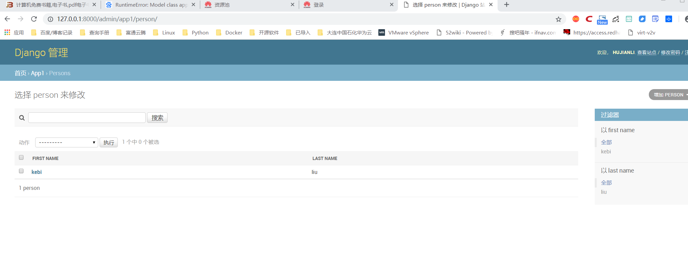
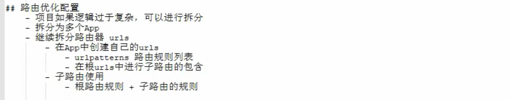

Contents
22.4.5. Django流程跑通¶
app1下的admin.py中配置
from django.contrib import admin # 引入admin模块
from app1.models import Person, Order # 引入数据模型类
class PersonAdmin(admin.ModelAdmin):
"""
创建PersonAdmin类，继承于admin.ModelAdmin
"""
# 配置展示列表，在Person板块下的列表展示
list_display = ('first_name', 'last_name')
# 配置过滤查询字段，在Person板块下右侧过滤框
list_filter = ('first_name', 'last_name')
# 配置可以搜索的字段，在Person板块下右侧搜索框
search_fields = ('first_name',)
# 配置只读字段展示，设置后该字段不可编辑
readonly_fields = ('created_at', 'updated_at')
# 绑定Person模型到PersonAdmin管理后台
admin.site.register(Person, PersonAdmin)
- 配置完成后，登录http://127.0.0.1:8000/admin/

路由¶

Django的URL路由流程： （1）Django查找全局urlpatterns变量（urls.py） （2）按照先后顺序，对URL逐一匹配urlpatterns每个元素 （3）找到第一个匹配时停止查找，根据匹配结果执行对应的处理函数 （4）如果没有找到或出现异常，Django进行错误处理
Django支持三种表达格式：
（1） 精确字符串格式
（2）Django的转换格式
（3）正则表达式格式
demo下的urls.py
from django.contrib import admin
from django.urls import path,include
urlpatterns = [
path('admin/', admin.site.urls),
path('app1/',include('app1.urls'))
]
找到项目根目录的配置文件夹demo下面的urls.py文件，打开文件，添加如下代码：
from app1 import views as app1_views
from django.urls import path
urlpatterns = [
# 精确匹配视图
path('articles/2003/', app1_views.special_case_2003),
# 匹配一个整数
path('articles/<int:year>/', app1_views.year_archive),
# 匹配两个位置的整数
path('articles/<int:year>/<int:month>/', app1_views.month_archive),
# 匹配两个位置的整数和一个slug类型的字符串
path('articles/<int:year>/<int:month>/<slug:slug>/', app1_views.article_detail),
]
如果想使用正则表达式，则使用如下代码:
from django.urls import re_path
from app1 import views as views
from django.urls import path
urlpatterns = [
# 精确匹配
path('articles/2003/', views.special_case_2003),
# 按照正则表达式匹配4位数字年份
re_path(r'^articles/(?P<year>[0-9]{4})/$', views.year_archive),
# 按照正则表达式匹配4位数字年份和2位数字月份
re_path(r'^articles/(?P<year>[0-9]{4})/(?P<month>[0-9]{2})/$', views.month_archive),
# 按照正则表达式匹配4位数字年份和2位数字月份和一个至少1位的slug类型的字符串
re_path(r'^articles/(?P<year>[0-9]{4})/(?P<month>[0-9]{2})/(?P<slug>[\w-]+)/$', views.article_detail),
]
表单¶
在app1文件夹下创建一个forms.py文件，添加如下类代码：
from django import forms
class PersonForm(forms.Form):
first_name = forms.CharField(label='你的名字', max_length=20)
last_name = forms.CharField(label='你的姓氏', max_length=20)
表单类forms.Form有一个is_valid()方法，可以在views.py中验证提交的表单是否符合规则。 对于提交的内容，在views.py编写如下：
from django.shortcuts import render
from django.http import HttpResponse, HttpResponseRedirect
from app1.forms import PersonForm
def get_name(request):
# 判断请求方法是否为POST
if request.method == 'POST':
# 将请求数据填充到PersonForm实例中
form = PersonForm(request.POST)
# 判断form是否为有效表单
if form.is_valid():
# 使用form.cleaned_data获取请求的数据
first_name = form.cleaned_data['first_name']
last_name = form.cleaned_data['last_name']
# 响应拼接后的字符串
return HttpResponse(first_name + '' + last_name)
else:
return HttpResponseRedirect('/error/')
# 请求为GET方法
else:
return render(request, 'name.html', {'form': PersonForm()})
在app1下创建一个templates目录，编写name.html文件
<!DOCTYPE html>
<html lang="en">
<head>
<meta charset="UTF-8">
<title>Title</title>
</head>
<body>
<form action="/app1/get_name" method="post">
{% csrf_token %}
{{ form }}
<button type="submit">提交</button>
</form>
</body>
</html>
添加URL到创建的app1/urls.py文件中。
from django.urls import re_path
from app1 import views as views
from django.urls import path
urlpatterns = [
path('get_name', views.get_name),
## 精确匹配
# path('articles/2003/', views.special_case_2003),
# # 按照正则表达式匹配4位数字年份
# re_path(r'^articles/(?P<year>[0-9]{4})/$', views.year_archive),
# # 按照正则表达式匹配4位数字年份和2位数字月份
# re_path(r'^articles/(?P<year>[0-9]{4})/(?P<month>[0-9]{2})/$', views.month_archive),
# # 按照正则表达式匹配4位数字年份和2位数字月份和一个至少1位的slug类型的字符串
# re_path(r'^articles/(?P<year>[0-9]{4})/(?P<month>[0-9]{2})/(?P<slug>[\w-]+)/$', views.article_detail),
]
此时访问访问 http://127.0.0.1:8000/app1/get_name

视图¶
在django项目中定义新的视图，app1/views.py
from django.http import HttpResponse # 导入响应对象
import datetime # 导入时间模块
def current_datetime(request): # 定义一个视图方法，必须带有请求对象作为参数
now = datetime.datetime.now() # 请求的时间
html = "<html><body>It is now %s.</body></html>" % now # 生成html代码
return HttpResponse(html) # 将响应对象返回，数据为生成的html代码
添加URL到创建的app1/urls.py文件中。
path('current_datetime', views.current_datetime),
定义一个404错误页面¶
app1/views.py
from django.shortcuts import render
from django.http import HttpResponse, HttpResponseRedirect, Http404
from app1.forms import PersonForm
from app1.models import Person
def person_detail(request, pk): # url参数pk
try:
p = Person.objects.get(pk=pk) # 获取Person数据
except Person.DoesNotExist:
raise Http404('Person Does Not Exist') # 获取不到抛出Http404错误页面
return render(request, 'person_detail.html', {'person': p}) # 返回详细信息视图
app1/urls.py
path('person_detail/<int:pk>', views.person_detail),

基于类的视图(CBV)¶
app1/views.py
from django.shortcuts import render
from django.http import HttpResponse, HttpResponseRedirect
from app1.forms import PersonForm
def get_name(request):
# 判断请求方法是否为POST
if request.method == 'POST':
# 将请求数据填充到PersonForm实例中
form = PersonForm(request.POST)
# 判断form是否为有效表单
if form.is_valid():
# 使用form.cleaned_data获取请求的数据
first_name = form.cleaned_data['first_name']
last_name = form.cleaned_data['last_name']
# 响应拼接后的字符串
return HttpResponse(first_name + '' + last_name)
else:
return HttpResponseRedirect('/error/')
# 请求为GET方法
else:
return render(request, 'name.html', {'form': PersonForm()})
from django.http import HttpResponse # 导入响应对象
import datetime # 导入时间模块
def current_datetime(request): # 定义一个视图方法，必须带有请求对象作为参数
now = datetime.datetime.now() # 请求的时间
html = "<html><body>It is now %s.</body></html>" % now # 生成html代码
return HttpResponse(html) # 将响应对象返回，数据为生成的html代码
from django.shortcuts import render
from django.http import HttpResponse, HttpResponseRedirect, Http404
from app1.forms import PersonForm
from app1.models import Person
def person_detail(request, pk): # url参数pk
try:
p = Person.objects.get(pk=pk) # 获取Person数据
except Person.DoesNotExist:
raise Http404('Person Does Not Exist') # 获取不到抛出Http404错误页面
return render(request, 'person_detail.html', {'person': p}) # 返回详细信息视图
from django.shortcuts import render
from django.http import HttpResponse, HttpResponseRedirect, Http404
from django.views import View
from app1.forms import PersonForm
from app1.models import Person
class PersonFormView(View):
form_class = PersonForm # 定义表单类
initial = {'key': 'value'} # 定义表单初始化展示参数
template_name = 'name.html' # 定义渲染的模板
def get(self, request, *args, **kwargs): # 定义GET请求的方法
# 渲染表单
return render(request, self.template_name,
{'form': self.form_class(initial=self.initial)})
def post(self, request, *args, **kwargs): # 定义POST请求的方法
form = self.form_class(request.POST) # 填充表单实例
if form.is_valid(): # 判断请求是否有效
# 使用form.cleaned_data获取请求的数据
first_name = form.cleaned_data['first_name']
last_name = form.cleaned_data['last_name']
# 响应拼接后的字符串
return HttpResponse(first_name + '' + last_name) # 返回拼接的字符串
return render(request, self.template_name, {'form': form}) # 如果表单无效，返回表单
app1/urls.py
from django.urls import re_path
from app1 import views as views
from django.urls import path
urlpatterns = [
path('get_name', views.get_name),
path('get_name1', views.PersonFormView.as_view()), # 看这里，就是类视图的url路由
path('current_datetime', views.current_datetime),
path('person_detail/<int:pk>', views.person_detail),
## 精确匹配
# path('articles/2003/', views.special_case_2003),
# # 按照正则表达式匹配4位数字年份
# re_path(r'^articles/(?P<year>[0-9]{4})/$', views.year_archive),
# # 按照正则表达式匹配4位数字年份和2位数字月份
# re_path(r'^articles/(?P<year>[0-9]{4})/(?P<month>[0-9]{2})/$', views.month_archive),
# # 按照正则表达式匹配4位数字年份和2位数字月份和一个至少1位的slug类型的字符串
# re_path(r'^articles/(?P<year>[0-9]{4})/(?P<month>[0-9]{2})/(?P<slug>[\w-]+)/$', views.article_detail),
]
在浏览器中访问 http://127.0.0.1:8000/app1/get_name1